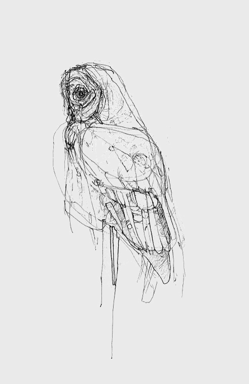

owl
Most owls are nocturnal, actively hunting their prey in darkness. Several types of owl, however, are crepuscular—active during the twilight hours of dawn and dusk; one example is the pygmy owl (Glaucidium). A few owls are active during the day also; examples are the burrowing owl (Speotyto cunicularia) and the short-eared owl (Asio flammeus).
Much of the owls' hunting strategy depends on stealth and surprise. Owls have at least two adaptations that aid them in achieving stealth. First, the dull coloration of their feathers can render them almost invisible under certain conditions. Secondly, serrated edges on the leading edge of owls' remiges muffle an owl's wing beats, allowing an owl's flight to be practically silent. Some fish-eating owls, for which silence has no evolutionary advantage, lack this adaptation.
